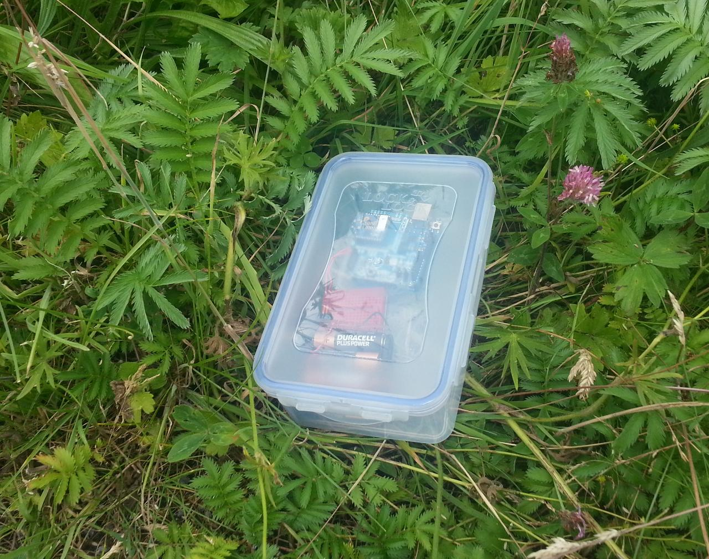

Radio survey
A simple radio survey establishes the ranges that the radios can manage.
The 2mW XBee radios we've got have a nominal range of 100m -- but that's in free air, with no obstructions like bushes, ditches, and houses, and not when enclosed in a plastic box to protect them from the elements. There's a reasonable chance that these obstacles will reduce the real range significantly.

A radio survey is fairly simple to accomplish. We load software that talks to a server on the base station -- something as simple as possible, like sending a single packet with a count every ten seconds -- and keep careful track of the return values coming back from the radio library. We then use the only output device we have -- an LED -- to indicate the success or failure of each operation, preferably with an indication of why it failed if it did. (Three flashes for unsuccessful transmission, five for no response received, and so forth.) We then walk away from the base station, watching the behaviour of the radio. When it starts to get errors, we've reached the edge of the effective range.
With two sensor motes, we can also check wireless mesh networking. If we place the first mote in range of the base station, we should then be able to walk further and have the second mote connect via the first, automatically. That's the theory, anyway...
(One extra thing to improve robustness: if the radios lose connection or get power-cycled, they can end up on a different radio channel to the co-ordinator. To prevent this, the radio needs to have an ATJV1 command issued to it. The easiest way to do this is at set-up, through the advanced settings in X-CTU.)
The results are fairly unsurprising. In an enclosure, in the field, with a base station inside a house (and so behind double glazing and suchlike) the effective range of the XBees is about 30--40m -- somewhat less than half the nominal range, and not really sufficient to reach the chosen science site: another 10--20m would be fine. On the other hand, the XBees mesh together seamlessly: taking a node out of range and placing another between it and the base station connects the network with no effort.
This is somewhat disappointing, but that's what this project is all about: the practicalities of sensor networking with cheap hardware.
There are several options to improve matters. A higher-powered radio would help: the 50mW XBee has a nominal range of 1km and so would be easily sufficient (and could probably be run at reduced transmission power). A router node halfway between base station and sensors could extend the network, and the cost of an additional non-sensing component. Better antennas on the 2mW radios might help too, especially if they could be placed outside the enclosure.
It's also worth noting that the radio segment is horrendously hard to debug with only a single LED for signalling. Adding more LEDs might help, but it's still a very poor debugging interface, even compared to printing status messages to the USB port.
Comments
Comments powered by Disqus